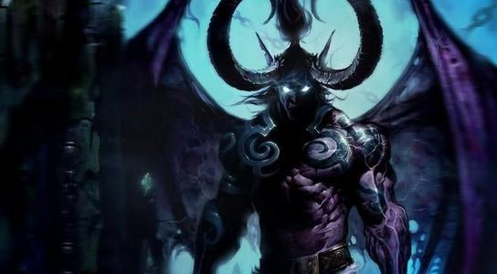

伊利丹原本是一位暗夜精灵平民 天生琥珀色眼睛
（暗夜精灵贵族为了区别平民 自称上层精灵 以前暗夜精灵是精灵统称 后来暗夜精灵就特指平民了）
琥珀色眼睛和鹿角 是天生具有极高德鲁伊修炼天赋的特征 当然了 德鲁伊法术修炼到巅峰也会出现琥珀色眼睛和鹿角 但和天生的意义不同
伊利丹的哥哥 大德鲁伊玛法里奥 也是后来修炼有成 才出现琥珀色眼睛和鹿角的
天生具有琥珀色眼睛的 目前所知魔兽中仅有伊利丹一人
天生具有鹿角的 目前仅有布罗尔·熊皮一人（此人被预言 可能会超越玛法里奥）
燃烧军团第一次入侵期间 伊利丹假意投靠燃烧军团 相当卧底
当伊利丹和萨格拉斯远隔宇宙空间进行谈话是时 伊利丹态度高傲 引起萨格拉斯不瞒
萨格拉斯烧掉伊利丹的眼睛以示惩罚 并赐予感知能量的能力来代替眼睛
从此 伊利丹失去了琥珀色眼睛 成为一个瞎子
伊利丹喜欢修炼奥术 魔兽中魔法特指奥术能量法术
半神塞纳留斯传授伊利丹和他哥哥玛法里奥德鲁伊法术时 伊利丹时常“逃课”
虽然如此 伊利丹也曾在燃烧军团第一次入侵中关键时刻使用了几次德鲁伊法术
伊利丹在成为恶魔猎手前 其法术造诣已经非常不错
在燃烧军团第一次入侵期间 伊利丹曾担任暗夜精灵最精锐法师部队月亮守卫部队的老大
说到这里 需要说一下永恒之井
永恒之井 是泰坦第二次来艾泽拉斯时建造的一座巨大能量湖泊 泰坦希望该能量能促进艾泽拉斯生物进化
后来一种夜行生物迁徙到艾泽拉斯附近定居 经过长期能量洗涤和促进进化 最终出现了暗夜精灵族
暗夜精灵族凭借永恒之井迅速崛起 击败了当时大陆的霸主 巨魔帝国
永恒之井可以说是暗夜精灵诞生和崛起的根本
而且永恒之井的存在 导致暗夜精灵永生 拥有无尽的寿命 可以被打死 但不可能衰老死亡
精灵女王艾萨拉和萨格拉斯勾结 在永恒之井上建立传送门 准备迎接萨格拉斯到来
玛法里奥等准备利用龙族神器击毁传送门阻止萨格拉斯到来 但是这会引爆永恒之井
伊利丹认为永恒之井是暗夜精灵的起源之地 毁掉对暗夜精灵来说太可惜
所以伊利丹在永恒之井爆炸前 利用几个特殊瓶子 装了几瓶永恒之井能量水
就连伊利丹也不曾想到 这几瓶能量水 对未来将会有多么大的影响
后来伊利丹参与引爆永恒之井 伊利丹站在永恒之井附近 作为一位强大的奥术法师
伊利丹抽调了大量永恒之井的奥术能量注入龙族神器恶魔之魂
同时 伊利丹的哥哥大德鲁伊玛法里奥抽调大量的自然之力 注入恶魔之魂
兄弟二人联手 击溃了传送门 也引爆了永恒之井
这场爆炸非常剧烈 原本艾泽拉斯星球只有一块完整的泛大陆
被愣是炸成了三块大陆：北极诺森德大陆 东面东部王国大陆 西面卡利姆多大陆
从侧面可知 伊利丹当时的功绩 然而伊利丹是一个悲剧性的人物
暗夜精灵只记得他哥哥的功劳
直到永恒之井爆炸之后 伊利丹在海加尔山的湖泊里倒入了几瓶永恒之井的能量水 建立了新永恒之井
伊利丹自认为自己为暗夜精灵一族重塑了永恒之井 是个英雄
但是玛法里奥、龙族等认为新的能量源 会再次引起燃烧军团的垂涎 引来燃烧军团入侵
殊不知 已经被恶魔盯上的猎物 即使炸掉了能量源 恶魔又怎么会善罢甘休
当时暗夜精灵的最高长官加洛德·影歌（守望者 玛维·影歌的弟弟）主张处死伊利丹
伊利丹的哥哥玛法里奥则主张终生监禁 因此伊利丹入狱
守护巨龙在新永恒之井上种下世界树：诺达希尔 来遮蔽新永恒之井澎湃的能量波动
青铜龙王在树上加持祝福 暗夜精灵重新获得永生
当然了 这也意味着伊利丹被终生监禁 时间将永无休止
永恒之井的爆炸 导致一部分上层精灵和精灵女王艾萨拉被卷入水底 他们投靠上古之神 变异为娜迦族
一部分上层精灵后来被暗夜精灵从卡利姆多大陆流放到东部王国大陆 也就是后来的高等精灵
仅有一小部上层精灵还留在卡利姆多大陆
伊利丹的其中一瓶永恒之井能量水 被高等精灵领袖达斯雷玛·逐日者得到（血精灵王子凯尔萨斯·逐日者的爷爷）
达斯雷玛·逐日者在东部王国大陆建立了奎尔萨拉斯王国 咋首都银月城用那瓶能量水建立了太阳井
高等精灵拥有强大的能量源 因此魔法文明从高等精灵手里 传授给人族
伊利丹自己恐怕都没想到自己小小一瓶能量水 竟然阴差阳错的早就了日后魔兽故事中无数著名的人类法师：艾格文、麦迪文、卡德加、吉安娜、安东尼达斯、罗宁、……
万年后 燃烧军团第二次入侵 月之女祭司泰兰德劫狱救出伊利丹 想借助伊利丹的力量对抗燃烧军团
监狱看守玛维··影歌 紧追不止
伊利丹后来与阿尔塞斯第一次相遇 二人初次交手 平分秋思 各自退走
临走前阿尔塞斯透露了古尔丹之颅的消息
恐惧魔王提克迪奥斯利用古尔丹之颅污染费尔伍德森林
伊利丹找到古尔丹之颅 吸收了古尔丹之颅的能量 长出了翅膀、蹄子、角 击杀了提克迪奥斯
法斯琪带领的一部分娜迦 感受到古尔丹之颅的力量 投靠了伊利丹
鉴于玛维·影歌带兵 紧追不止 最终伊利丹不得不再次投靠燃烧军团
基尔加丹命令伊利丹击杀巫妖王
伊利丹凭借古尔丹之颅的记忆 找到了萨格拉斯之墓
当初击杀古尔丹的恶魔早已离开了萨格拉斯之墓
伊利丹成功在萨格拉斯之墓找到了萨格拉斯之眼（顺带一提 萨格拉斯之眼不是萨格拉斯的眼睛 只是一颗宝石神器 百度词条“萨格拉斯之眼”中俺进行了解释）
伊利丹利用萨格拉斯之眼 在洛丹伦王国的废墟上进行法术仪式 准备轰击冰封王座
但是萨格拉斯之眼的威力非常巨大 如果仪式成功 毁掉的将不仅是冰封王座 整个诺森德大陆的大陆架都会被撕裂……
因此 暗夜精灵部队阻止了伊利丹的仪式
然而这个仪式的威力是如此巨大 仅仅是前奏 都导致巫妖王耐奥祖的力量不断下降 不得不急招阿尔塞斯来合体
伊利丹以前和阿尔塞斯交手 平分秋思
拥有古尔丹之颅后 获得恶魔变身能力、飞行能力 自信心膨胀
埃辛诺斯战刃虽强 但毕竟不如霜之哀伤
伊利丹作为一个强大的法师 伊利丹完全可以飞在空中施法 来规避和霜之哀伤硬拼
但是伊利丹却选择直接肉搏
《巫妖王的崛起》中描述 伊利丹被阿尔塞斯砍了一剑 但伊利丹毫不在意
腾空而起发动变身 疯狂叫嚣要杀死阿尔塞斯 但却又选择了近身肉搏
此时阿尔塞斯沉着应战 加上人品爆发 抓住伊利丹轻敌的破绽发出决胜一剑
伊利丹倒在血泊中 阿尔萨斯急于和巫妖王合体 而且可能认为伊利丹死定了吧 没有再补刀
谁想到伊利丹生命顽强 居然没死 又逃回了外域
最终 玛维·影歌带兵进攻伊利丹的黑暗神庙
伊利丹手下的破碎者首领阿卡玛背叛了伊利丹（破碎者在魔兽争霸中叫做 达拉内尔人）
伊利丹依然高傲 说出了那句“你们这是自寻死路”
伊利丹死在了玛维·影歌大军的手中
伊利丹的一生比较悲剧 为了族人努力却不受理解
他入狱时 没有人记得他在燃烧军团第一次入侵时 做出的贡献
当暗夜精灵利用月亮井井水疗伤时 他们不记得为他们提供井水的伊利丹 因为给他们提供了井水而被关入监狱（月亮井井水 就是稀释后的永恒之井井水）
当无数德鲁伊施放德鲁伊招牌技能之一 月火术时
没有人记得月火术的施法材料是浸泡过月亮井井水的鹅卵石
世界树是巨龙为遮蔽新永恒之井能量波动种下的
可是世界树自身 却引来了阿克蒙德的垂涎
伊利丹不建造新永恒之井 龙族不会种植世界树诺达希尔
然而 没有新永恒之井 不妨碍阿克蒙德被克尔苏加德召唤过来

已经被燃烧军团盯上的艾泽拉斯 如今有没有新永恒之井 恶魔也不会轻易放弃
没有新永恒之井 没有世界树 如何杀死阿克蒙德？
玛法里奥吹响塞纳留斯号角杀死阿克蒙德的法术叫“诺达希尔之怒”
顾名思义 是世界树的愤怒
小精灵击中阿克蒙德只是前奏 世界树爆发 根须成为烈焰色才是 真正的击杀
然而也在众人称赞玛法里奥时 有谁记得这场胜利的由来 有伊利丹的功劳？
又有谁记得 伊利丹正在为此而坐牢